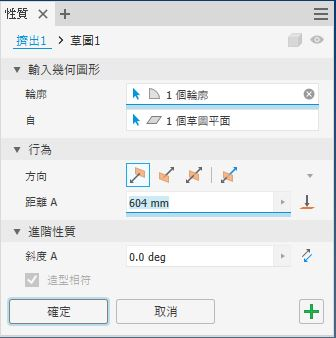
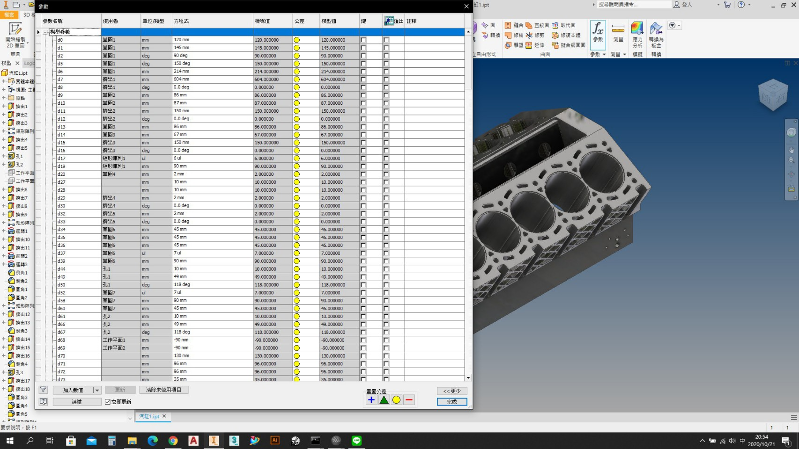
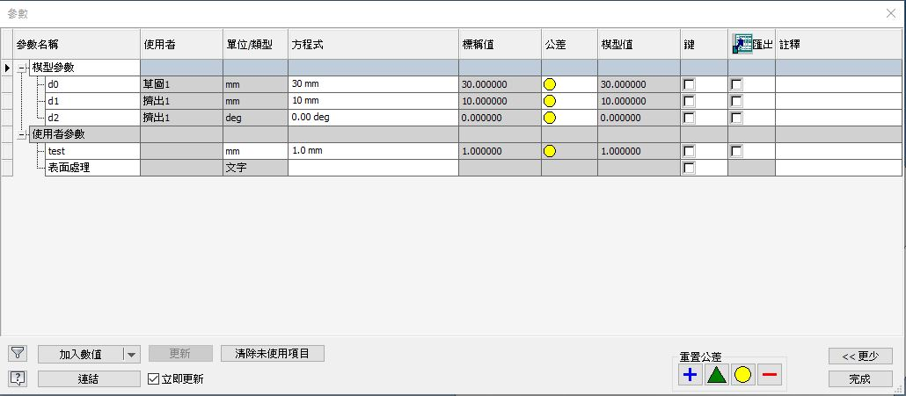
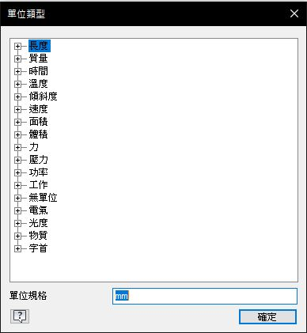
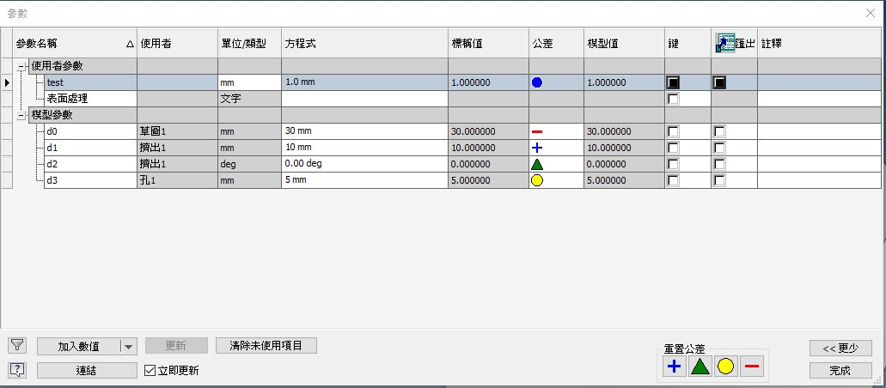

Inventor API <<
Previous Next >> ilogic Basic
參數
Inventor 在建立零件與組合模型的過程中會帶入許多"參數"

這些參數在模型檔案中會被整合在"參數表中", 如下圖:


如上圖, 有各種參數屬性, 以下逐項介紹:
模型參數:
為使用者在繪製物件時所自動加入的參數
模型參數從d0~dn項, 都是在建立幾何的過程中Inventor自動產生的
使用者參數:
為使用自行加入的條件與尺寸或者方程式
使用者:
會列出影響到參數的幾何-約束-特徵-草圖等等, 除非該指令無影響到參數
單位類型:
在"模型參數"中，Inventor 會自動根據使用者使用的尺寸標註方式選擇長度 (mm) 或者是角度 (deg) 單位，另外會用到如配合陣列數量的無單位(ul)
單位類型如下:

方程式:
最常使用的就是直接將"常數"填入使其做計算,也可以直接鍵入方程式, 最後由標稱值欄位顯示結果
標稱值:
如果方程式欄位中為"常數"此欄會直接顯示常數
如果方程式欄位中為"方程式"此欄會將方程式做計算最後顯示結果
公釐:

紅色"負號"表示使用下限作為模型值
藍色"加號"表示使用上限作為模型值
綠色"三角"表示用中間值作為模型值
黃色"圓環"表示用標稱值作為模型值
模型值:
標稱值加上公差設定的計算結果, 惠珍的套用到模型中改變尺寸
註釋:
可以加上參數的用途說明
Inventor API <<
Previous Next >> ilogic Basic